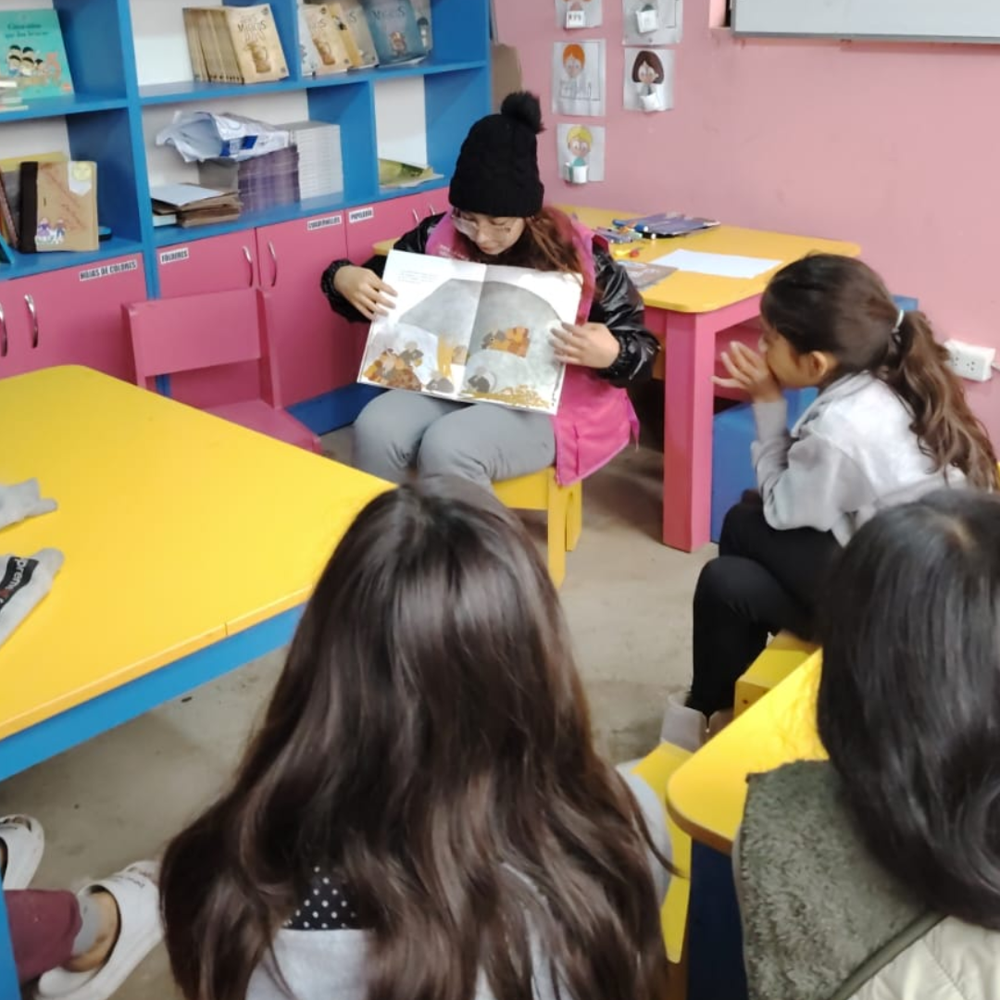

Nicomedes en la FIL 2025 - Ministerio de Cultura
Voluntariado Cultural
Convocatoria abierta ✅

- Lugar: Biblioteca Comunal Victor Mazzi, Lurigancho Chosica
- Fecha - Hora: 27/06/2005 - 3pm a 5pm
- Motivo: Promoción de la lectura en niños y niñas en la comunidad de Vallecito.
Comunicación & Audiovisuales - PLPLJ
Voluntariado Social
Convocatoria abierta ✅
Huaca "El Paraiso" - Brigada Justo Chirinos
- Lugar: Cerca del puente por el río Chillón, en San Martín de Porres
- Fecha - Hora: 12/06/2025 - 9am a 1pm
- Motivo: Limpieza de la Huaca "El paraiso" y concientización sobre la importancia de la eliminación de residuos solidos que contaminan las cosechas y riachuelos de la zona.
Voluntariado Ambiental
Convocatoria abierta ✅